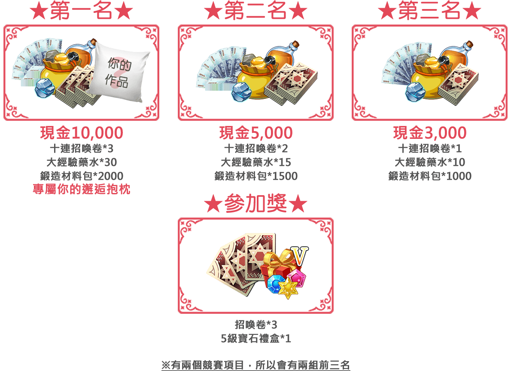
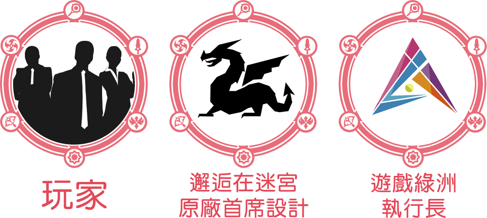

活動時間
投稿作品：2019/02/21(四)~2019/03/17(日)23:59 止
投票評審：2019/02/27(三)~2019/03/24(日)23:59 止
得獎公布：2019/03/28(四)
活動方式
- 透過報名頁面，投稿作品至《邂逅在迷宮同人插畫大賽》頁面。
- 營運團隊將會審查上傳之內容，審核通過即算是參賽成功。
- 每個展示區，每人每天都可投一票。
- 將依玩家票選+評審評選，作為最後結果。
創作類型：電繪、手繪皆可；不限制漫畫或是插圖。
投稿格式：長寬不得小於800pix，檔案大小1M以內，檔案格式：JPG/JPEG檔。
R18投稿：禁止血腥、獵奇…等，含暴力題材之繪圖。
評分標準：網友投票數40% 邂逅在迷宮營運團隊30% 邂逅在迷宮原廠設計團隊30%
活動獎勵

評審

注意事項
- 同一項目可投稿多次，但每位參賽者每個項目，會以最高票的作為代表，同一個項目不可重複獲獎。
- 所有稿件皆須透過營運團隊審核，審核時間：每日中午12點/下午6點/晚上9點
- 所有參賽作品必須基於官方遊戲作品【邂逅在迷宮】進行創作，不得剽竊或抄襲運用非經授權之影片、音樂、圖文等資料。若發現參賽作品有違反本比賽規則所列之規定者，得即刻取消其參賽資格，若為得獎作品，則追回已頒發之獎項並公告之。如造成第三者之權益損失，參賽作品創作者得負完全法律責任，不得異議。
- 未經官方同意，參賽者在參賽期間不得將作品自行用於商業用途或授權於主辦單位以外的廠商使用，且得獎者作品不得再進行其他營利之行為。
- 參賽者需同意參賽作品可供官方作為推廣素材，曝光於遊戲粉絲團作宣傳用途。
- 實際獎項將會評判參加作品而【從缺】或是【增加名額】。
- 禁止透過任何不正當手段影響活動數據，或破壞比賽公平原則的行為，情節嚴重者取消參賽資格。
- 如遇不可抗拒之因素，官方保有隨時修改活動辦法及獎項或中止本活動之權利。
- 其他未規定事項，官方會依據狀況於遊戲網站或遊戲中公告或補充，參加者不得異議，官方保留最終解釋權。
- 前三名獲獎者請於得獎七日內聯繫粉絲團，並填寫相關表單以利資料核對，若無法提供者，將視同放棄獲獎資格。
- 海外玩家，獎金將會以台幣跟相關地區匯率兌換，若有稅收相關將從獎金中扣除；玩家也可以選擇將獎金兌換成2倍的遊戲內商城鑽石二擇一。